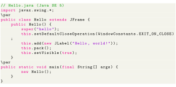
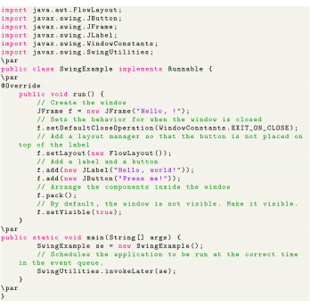

Next: JavaFX application Up: Swing application Previous: Swing application Contents
This example Swing application creates a single window with Hello, world! inside.

The first includes all the public classes and interfaces from the package. The class the class; the class implements a window with a title bar and a close control.
The constructor initializes the frame by first calling the superclass constructor, passing the parameter hello, which is used as the window's title. It then calls the method inherited from to set the default operation when the close control on the title bar is selected to - this causes the to be disposed of when the frame is closed (as opposed to merely hidden), which allows the Java virtual machine to exit and the program to terminate. Next, a is created for the string Hello, world!" and the method inherited from the superclass is called to add the label to the frame. The method inherited from the superclass is called to size the window and lay out its contents.
The
method is called by the Java virtual machine when the program starts. It instantiates a new Hello frame and causes it to be displayed by calling the
 method inherited from the
method inherited from the
 superclass with the boolean parameter
. Once the frame is displayed, exiting the main method does not cause the program to terminate because the AWT event dispatching thread remains active until all of the Swing top-level windows have been disposed.
superclass with the boolean parameter
. Once the frame is displayed, exiting the main method does not cause the program to terminate because the AWT event dispatching thread remains active until all of the Swing top-level windows have been disposed.
The following is a rather simple Swing-based program. It displays a window (a JFrame) containing a label and a button.

Notice how all instantiation and handling of Swing components are done by creating an instance of the class, which implements the Runnable interface. This is then run on the Event Dispatch Thread by use of the method , created in the main method. Although Swing code can be run without using this technique (for instance, by not implementing Runnable and moving all commands from the run method to the main method), it is considered to be good form, as Swing is not thread-safe, meaning that invoking resources from multiple threads can result in thread interference and memory consistency errors.